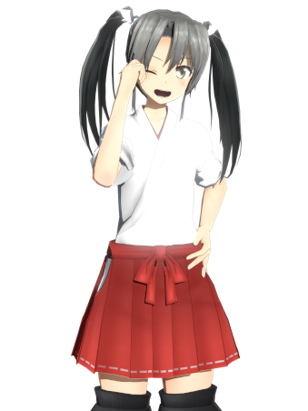
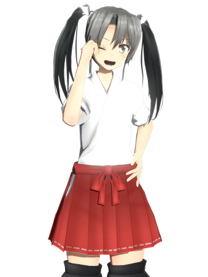

瑞鶴
“艦娘らしくない艦娘”
『私は 翔鶴型航空母艦 2番艦―― 瑞鶴 だ！』
艦娘としての“力”が無く、かつての大戦の記憶もないイレギュラーな艦娘。
その来歴から仲間に遠慮している節があるが、しばしば言いたいことを言う生来の芯の強さが見え隠れする。
気が強いけど気は小さい、頑張った分だけ自信がつくタイプ。
常識人なため、よく周囲のボケに振り回される。
意識不明の状態で漂流していたところを発見・救助されたが、その異質さ故に隔離兵舎で軟禁されていた。
様々な試験や検査の結果、艦娘に足る特徴を有していることが判明したが、艦娘が持ち合わせているはずの技能・知識は欠落していた。
その結果、国益のために彼女をどのように処遇するかで、海上自衛隊艦娘統括本部（大本営）は意見が割れることとなる。
そのような事情が取り巻く中で、彼女は周囲の者たちの視線や会話から、自分が望まれない存在であることを感じ取っていた。
「自分は何のために生まれたのだろう？」
打ちひしがれていた彼女の元に、ある晩、一人の艦娘が訪れる。
「翔鶴」と名乗るその艦娘は、「あなたを助けに来た」と告げ、彼女に衝撃的な提案を持ちかける。
それは、自分を無価値だと思い込んでいた名無しの艦娘の心を揺さぶり、彼女の瞳に道しるべとなる光を映した――。


 
